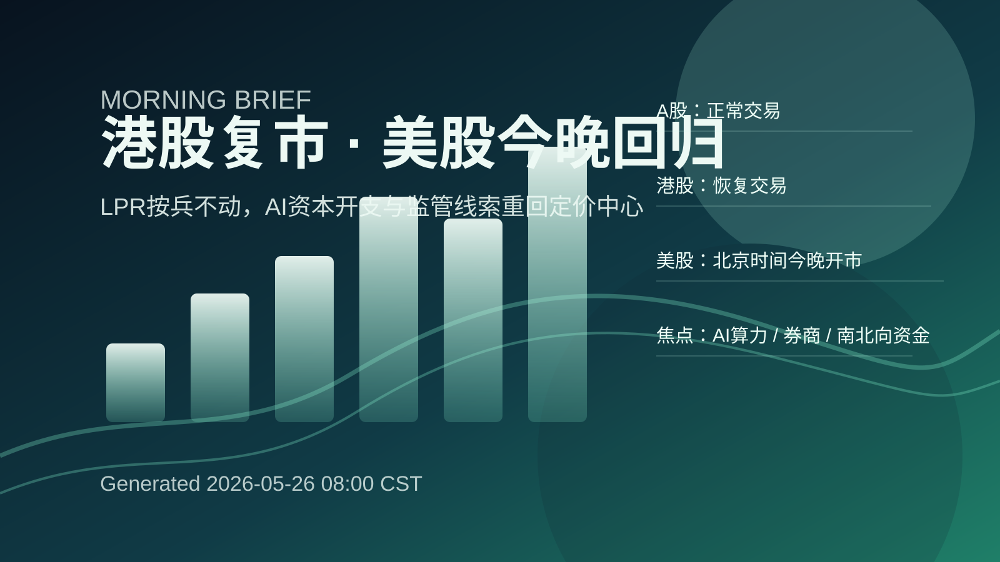
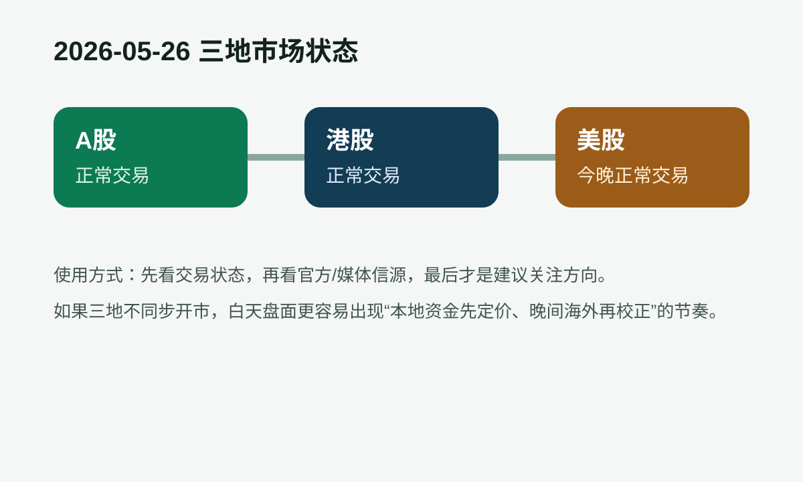

事实：美联储降息预期分歧，美国银行中期仍看涨黄金。来源：新浪财经｜2026-05-26 04:29 UTC。 密集加息信号蕴藏滞胀风险。来源：rss.jingjiribao.cn｜2026-05-25 22:50 UTC。 环球下周看点： 中东战局持续扰动全球市场 美国重磅通胀报告将出炉。来源：财联社｜2026-05-26 03:02 UTC。
- 推断：全球资产更容易围绕利率路径、美元与久期估值展开再平衡，成长板块需要晚间美股继续背书。

A股今天正常交易；港股今天正常交易；美股将在北京时间今晚恢复或维持交易。今天的盘面主导变量仍是全球利率、美元与风险资产估值的再平衡。
事实：美联储降息预期分歧，美国银行中期仍看涨黄金。来源：新浪财经｜2026-05-26 04:29 UTC。 密集加息信号蕴藏滞胀风险。来源：rss.jingjiribao.cn｜2026-05-25 22:50 UTC。 环球下周看点： 中东战局持续扰动全球市场 美国重磅通胀报告将出炉。来源：财联社｜2026-05-26 03:02 UTC。
事实：整治非法跨境证券期货基金，对市场影响几何？。来源：搜狐网｜2026-05-26 02:47 UTC。 【早报】证监会：增设创业板第四套上市标准；主板ST股涨跌幅拟调整为10%。来源：财联社｜2026-05-25 04:37 UTC。 安路科技(688107):中国国际金融股份有限公司关于上海安路信息科技股份有限公司2026年度向特定对象发行A股股票之上市保荐书- CFi.CN 中财网。来源：中财网｜2026-05-25 13:25 UTC。
事实：Kevin Warsh takes oath of office as chairman and a member of the Board of Governors of the Federal Reserve System, and the Federal Open Market Committee unanimously selects Warsh as its chairman。来源：Federal Reserve｜2026-05-22 20:15 UTC。 Agencies publish resolution plan feedback letters for certain domestic and foreign banking organizations。来源：Federal Reserve｜2026-05-22 20:00 UTC。 Federal Reserve Board issues enforcement action with former employee of Commerce Bank。来源：Federal Reserve｜2026-05-21 15:00 UTC。
事实：恒生科技高开，港股新规有望提升港股通标的和港股ETF的交易活跃度。来源：新浪财经｜2026-05-26 01:31 UTC。

今日风险提示与关键日程
关注理由：新闻流里如果 AI、芯片和大模型更密集，增量资金更愿意追逐高弹性成长；如果政策与监管口径更强，金融和制度受益链条更容易先被定价。
催化因素：政策口径、成交额放大、核心龙头指引或海外科技股晚间反馈。
主要风险：高位波动、估值消化不足，或北向/情绪没有同步放大。
关注理由：如果宏观稳增长与消费修复相关表述增多，内需链更适合看边际改善；若地缘、关税和能源新闻更密，资源对冲属性会更突出。
催化因素：宏观政策增量、商品价格变化、地缘与贸易事件的边际升级或缓和。
主要风险：价格传导慢、需求验证不足，或单纯主题化导致追高回撤。
关注理由：美股仍是全球成长资产的估值锚，AI 龙头的资本开支、订单与监管口径会直接影响亚洲成长链的溢价。
催化因素：Fed/SEC 更新、科技龙头新闻、10Y 美债收益率与纳指期货方向。
主要风险：收益率上行压估值、监管强化或龙头业绩/指引不及预期。
关注理由：港股对海外情绪更敏感，平台经济和南向资金往往一起决定指数弹性；若政策线更强，高股息金融也容易成为避震仓位。
催化因素：南向资金恢复、平台公司新闻、港交所披露与人民币汇率。
主要风险：南向回流弱于预期、美元走强压制估值，或地产链拖累指数风险偏好。
免责声明